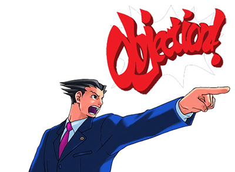
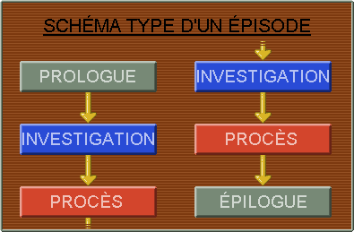
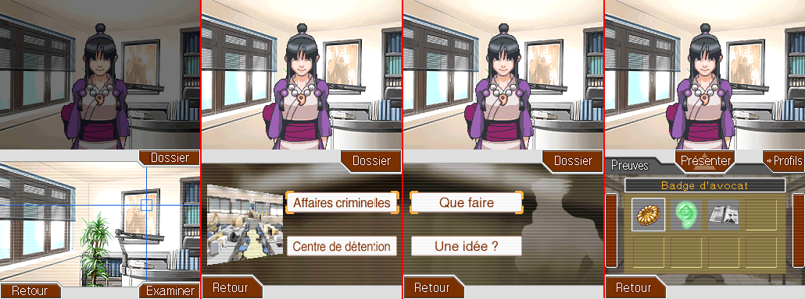
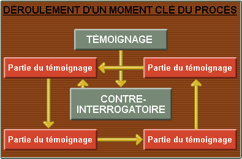
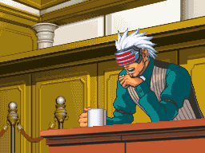

Game Design & Ace Attorney
Si je vous demande de me citer un avocat de la défense habillé en bleu, avec une tête de hérisson et qui crie « OBJECTION ! » à tout bout de champ, vous me répondez immédiatement : Phoenix Wright.

Les Ace Attorney sont une série de jeux d'enquête découpés en deux phases bien distinctes : l'investigation et le procès. Dans un premier temps, le protagoniste, avocat de son état, va sur le terrain pour enquêter, récupérer des indices et des preuves et faire la lumière sur les circonstances du crime. Dans un deuxième temps, il revient au tribunal pour mener interrogatoires et contre-interrogatoires, affronter le procureur général (et le juge !) dans le but de prouver l'innocence de son client.

Des jeux avec des énigmes, il en existe à la pelle, comme les Myst ou la série Sherlock Holmes. Mais des jeux où l'on incarne un avocat de la défense, personnellement, je n'en avais jamais vu. C'est là l'innovation de Capcom : en plus de devoir résoudre le mystère, il faut être capable de prouver l'innocence de son client.
Wikipédia décrit la série des Ace Attorney comme des jeux d'aventure. Ce n'est pas entièrement faux mais il n'y a pas que ça. Si l'on s'en tient à la première phase de jeu, l'enquête, on peut considérer qu'il s'agit d'un jeu d'aventure au même titre qu'un The Longest Journey ou un Grim Fandango. Mais la deuxième phase, celle qui fait tout le sel et l'originalité du jeu, ne rentre pas du tout dans cette catégorie : elle s'apparenterait plus du fameux duel d'insultes des Monkey Island et s'oriente beaucoup plus vers le dialogue que la recherche.
Première phase : l'enquête
Des deux phases qui constituent le jeu, l'enquête est la moins importante. Elle est conçue pour amener et préparer la phase de procès. Elle expose rapidement les personnages, les lieux, les objets et les enjeux et permet au joueur de réunir les indices et objets nécessaires pour le procès à venir.
La plupart des jeux d'aventures sont basés sur l'exploration, la recherche d'objets, la possibilité d'agir sur des éléments ou de résoudre des casse-têtes que le joueur peut rencontrer (découvrir un nouveau lieu, ouvrir une porte avec une clef, tirer sur un levier, trouver la solution d'une énigme, etc.), comme dans Atlantis ou Myst. Les dialogues peuvent se faire rares voire inexistants et on touche parfois au désert (le poétique L'Amerzone est terriblement dépeuplé, d'où son ambiance profondément mélancolique).
Dans Ace Attorney, la phase d'enquête est au contraire réduite à l'essentiel et est conçue pour mettre en avant le dialogue au détriment de l'exploration. Tout est fait pour que le joueur avance aussi vite que possible afin de se concentrer sur les dialogues et sur la phase de procès qui va venir. Le joueur évolue dans des décors fixes, sans déplacements (ce qui n'est pas le cas pour un Simon the sorcerer par exemple, où le personnage met dix secondes pour aller d'un bord à l'autre de l'écran). Un simple clic suffit pour examiner les objets, examen qui donne le plus souvent lieu à un dialogue – hilarant – entre les personnages. L'interface est réduite au minimum (cinq boutons à tout casser) pour pouvoir laisser le joueur se concentrer sur les dialogues qui sont longs, très animés et nombreux. Une fois écouté, le dialogue est coché et peut-être réécouté en accéléré, ce qui permet au joueur de revenir rapidement au passage qui l'intéresse. Pour être sûr que le joueur sente qu'il est dans la bonne direction et qu'il aille plus vite, les développeurs utilisent un petit effet visuel et sonore : lorsque quelque chose a changé dans un décor (disparation ou apparition d'un personnage, nouvel objet, etc.), une boîte de dialogue affiche le nom du lieu, la date et l'heure avec un effet machine à écrire (et le bruitage associé, bien sûr). Tout est fait pour remettre le dialogue au centre du gameplay et accélerer le rythme de jeu : l'important, c'est d'aller jusqu'au procès !

Toutes les fonctionnalités du classique jeu d'aventure ont été liftées pour pouvoir coller au cœur du jeu : vous incarnez un avocat, d'où un gameplay centré sur le dialogue et sur le procès. L'inventaire, par exemple, est réduit au plus simple : pas de combinaison hasardeuses d'objets (Dieu merci !), de jolies icônes avec une description brève et efficace, pas besoin de faire de grands efforts pour se rappeler comment il l'a obtenu. Plutôt que de s'embarquer sur des fonctionnalités trop complexes avec les objets, les game designers ont choisi de les insérer au maximum dans les dialogues. Les objets ne doivent pas, la plupart du temps, être utilisés sur le décor mais montrés à des personnages comme preuves. La moindre utilisation donne lieu à un dialogue plutôt qu'à une animation. Cette direction se retrouve jusque dans la direction artistique du jeu : les décors sont peu nombreux et extrêmement basiques, alors que les personnages ont droit à de grands portraits (les pixel artistes de Capcom ont fait des merveilles) et de très nombreuses animations pour émailler les dialogues ; la bande-son est ponctuée de nombreux bruitages pour rythmer les conversations avec les personnages et l'ensemble en retire un côté anime pas déplaisant du tout.
Deuxième phase : le procès
Passons maintenant au procès. Le (relatif) sentiment de liberté que le joueur a pu connaître durant la phase d'enquête se volatilise, car il ne peut tout simplement plus se déplacer, il est obligé de se plier aux règles, confiné dans une salle où règne l'ordre et la justice, j'ai nommé : le tribunal. Le joueur n'est bien évidemment lâché comme ça dans l'arène : le procureur présente les faits (« Le suspect est accusé d'avoir tué la victime à tel endroit et telle heure. ») et l'inspecteur nous détaille le rapport d'autopsie. Enfin, le témoin oculaire raconte sa version des faits. Si le joueur a décidé de faire une longue pause avant d'entamer la phase de procès, c'est aussi une excellente occasion pour lui de se remettre dans le bain.
Et c'est là que vous entrez en scène ! Eh oui, la présomption d'innocence n'a pas cours dans le monde cruel des Ace Attorney et c'est à vous de réussir à disculper votre client. Il est possible que le témoin mente, qu'il ait dit quelque chose d'incohérent ou qu'il ait oublié un élément capital lors de sa déposition. Le témoignage prend la forme d'une boucle dont vous ne pourrez sortir qu'en trouvant la bonne réplique ou la bonne preuve et en la présentant au moment adéquat.

Pour cela, le joueur peut choisir de faire pression sur le témoin, de le « cuisiner », ce qui permettra de lui faire révéler de nouvelles informations qu'il ajoutera à son témoignage, ou de lui présenter une preuve qui démontre que sa déposition est incohérente. Si vous trouvez la bonne option, vous progressez dans le procès et sinon, vous verrez la jauge de patience du juge diminuer. Arrivé à zéro, vous serez confrontés à une nouvelle version du classique game over : Coupable.
Pourquoi avoir mis en place un tel système ? Il y a plusieurs raisons à cela. Pour commencer, imaginez ce qui aurait pu se passer s'il n'y avait pas cette barre : le joueur doit montrer un élément du dossier, il lui suffit donc de présenter bêtement un par un tous les objets qu'il possède. En ajoutant cette jauge, on force le joueur à s'arrêter un moment et à réfléchir à la situation. Autrement dit, on fait monter la pression !
Cette pression, on va la retrouver partout dans le jeu et c'est elle qui va accaparer toute l'attention du joueur, non seulement quand le juge met une amende mais également quand le joueur doit faire face à un choix, quand il se demande quelle preuve pourra faire l'affaire dans une situation donnée, quand le procureur revient à la charge, etc.
La musique joue ici un rôle très important. Si la bande-son des phases d'enquête est tout ce qu'il y a de basique, les morceaux conçus pour accompagner les phases de procès ont bénéficié d'un soin remarquable. A chaque avancée dans le procès, à chaque preuve que vous présentez, à chaque coup que le procureur vous assène (très souvent littéralement), la musique accélère. La piste qui accompagne le procès est décomposée en différents mouvements correspondant à des rythmes différents et qui vont servir à faire monter ou à faire redescendre la pression en accélérant ou en ralentissant le tempo. On peut rien qu'à l'oreille savoir à quelle phase du procès on se situe. Et ce n'est pas tout ! À partir du moment où le joueur présente la bonne preuve, la tension atteint son paroxysme : la musique s'arrête net. On respire un bon coup, satisfaction du joueur qui se dit : « Ouais, c'est ça, j'ai trouvé ! ». On se rapproche d'un cran de la vérité et bien entendu, le procureur ne va pas se laisser faire et va tenter de faire voler vos raisonnements en éclats.
L'aspect graphique de la direction artistique vise aussi à installer cette narration forte qui fait l'intérêt des procès dans le jeu. Dans la plupart des jeux d'aventure, on peut deviner si un personnage est content, triste ou en colère en fonction de l'intonation du doubleur. Mais dans Ace Attorney, point de doublage (sur une DS, c'est pas forcément évident). Capcom a pallié ce manque en concentrant les efforts des graphistes sur les sprites des personnages : ceux-ci sont très grands, très soignés et disposent d'animations fluides et variées (on sent l'expertise Street Fighter). Certaines expressions et mimiques (souvent accompagnées de bruitages) sont volontairement exagérées afin de souligner les passages dramatiques. Les seules voix utilisées ont été réservées pour les points culminants de la narration, les moments où Phoenix lâche son célèbre « OBJECTION ! ». Par ailleurs, l'interface du jeu n'est plus du tout la même que dans les phases d'exploration. On voit le protagoniste à la troisième personne et non plus à travers ses yeux. L'écran affiche tour à tour différents angles de vue du tribunal et le passage de l'un à l'autre permet de mieux immerger le joueur : les mouvements de caméra, en s'accélérant (voire en devenant instantanés), soulignent le rythme de la narration au même titre que la musique et donnent un côté cinématographique (presque similaire à une série) à l'ensemble.
Alors, il est parfait ce jeu ?
Ace Attorney a beau être une version rajeunie du jeu d'aventure textuel, il n'en souffre pas moins de certains défauts.
Le scénario est parfaitement linéaire, qu'il s'agisse de la phase d'enquête ou de la phase de procès. Même si le joueur à l'impression qu'il est libre de visiter n'importe quel lieu à n'importe quel moment lors de la phase d'enquête, il doit cependant épuiser tous les sujets de conversations d'un protagoniste avant d'aller pouvoir parler au suivant. Cette linéarité se manifeste aussi par l'obligation de présenter la bonne preuve au bon moment. Il arrive parfois que la logique du scénario échappe au joueur ou pire, que celui-ci prévoit le dénouement (pas forcément du procès, mais d'une séquence au moins) et essaye de brûler les étapes : le jeu n'est pas conçu pour ça et l'intrigue, pourtant brillamment ficelée, révèle son caractère « construit », artificiel, linéaire.

Cette linéarité est par ailleurs la cause logique d'une mauvaise rejouabilité : il y a relativement peu d'intérêt à refaire les enquêtes une fois celles-ci découvertes (ou du moins pas avant un long moment) car leur intérêt réside principalement dans leur intrigue et dans les rebondissements dont elles sont émaillées. Il n'y a pas ici un style d'écriture ou une finesse d'observation sociologique qui justifieraient une relecture comme pour les romans d'Agatha Christie (du moins, pas dans les traductions française et anglaise du jeu).
Affaire classée
Les Ace Attorney ont su apporter du renouveau au genre du jeu d'aventure en faisant le choix de se recentrer sur le dialogue et la discussion : en utilisant à bon escient des fonctionnalités de gameplay (dialogues accélérés, absence de déplacements) et en proposant une direction artistique d'une économie remarquable (efforts concentrés sur les personnages et non les décors, utilisation de la musique comme un véritable métronome.), Capcom a su créer un rythme et une rapidité de jeu hors norme et à éviter les travers du genre (bavardage, personnages transparents, etc.).
Mon analyse se termine ici. Comme c'est mon premier article, j'espère qu'il vous aura plu et qu'il vous aura ouvert de nouvelles perspectives sur le game design. La saga des Ace Attorney est un retour aux sources du jeu d'aventure et elle ne semble pas prête de s'arrêter.
Ajouter un commentaire
Commentaires

Yep, un test orienté game design c'est sympa mais quand c'est bien fait et que ça parle des ace attorneys c'est encore mieux, merci bien!

Une analyse très intéressante, la partie sur la musique est particulièrement instructive, merci beaucoup !